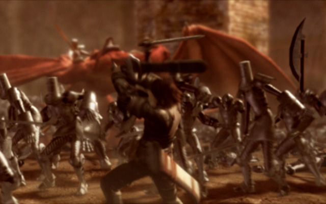
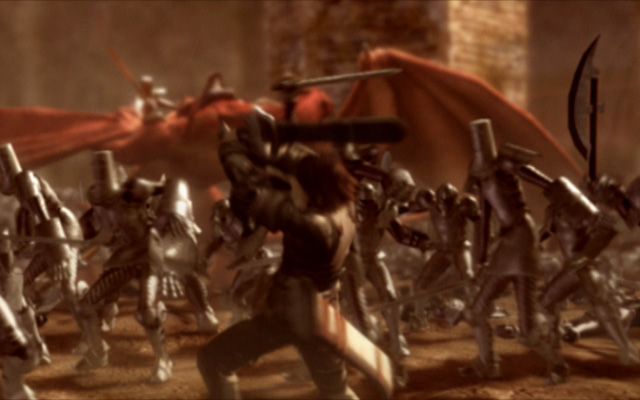

Drakengard est un jeu de rôle, Action-RPG développé sur PS2 par Cavia et édité par Enix, sortie le 11 septembre 2003 au Japon. Drakengard vous permet de prendre part à des combats aussi bien terrestres qu'aériens au côté de votre dragon de compagnie. La bête se montre redoutable lorsqu'elle s'énerve et sa puissance ne sera pas de trop pour suppléer vos lames et vos magies déjà très efficaces.
Prologue
Le monde est protégé par 4 sceaux, dissimulés de-par le monde, afin de le sécuriser des contraintes. Le poids des sceaux est incombé à une jeune fille, la déesse. En sacrifiant sa liberté, elle permet au monde d'être en sécurité. Mais la force grandissante de l'Empire, dirigée par la prêtresse-enfant Manah, décida de rompre l'équilibre du monde et attaqua les sceaux. L'Union, rivale de l'Empire, se chargea de protéger la Déesse.
Le Bastion de la déesse fut assiégé, et Caim, soldat de l'Union, prit les armes pour défendre le château. Mais mortellement blessé, il dût se résoudre à pactiser avec un dragon rouge abattu par l'Empire, dans l'enceinte de la forteresse. Malgré son dégoût pour ces créatures, il aida le dragon à s'échapper, au prix de sa voix.
Après le siège, il retrouva sa sœur Furiae, la déesse actuelle, et son ami Inuart. Ils se mirent en quêtes des sceaux, pour retrouver le prêtre Verdelet, et de s'assurer de leur protection.
 
